Beniamin BOGOSEL
Optimization of Dirichlet Eigenvalues under Volume Constraint
To a bounded open set $\Omega\subset \Bbb{R}^N$ we can associate the eigenvalues $$ 0<\lambda_1(\Omega) \leq \lambda_2(\Omega) \leq \cdots \to \infty$$ of the Dirichlet Laplace operator. They are solutions of the eigenvalue problem $$ \begin{cases} -\Delta u = \lambda u \\ u \in H_0^1(\Omega) \end{cases}$$. Note that the Dirichlet spectrum can be defined whenever the injection $H_0^1(\Omega)\hookrightarrow L^2(\Omega)$ is compact.
The Dirichlet eigenvalues admit the following variational characterization: $$ \lambda_k(\Omega) = \min_{S_k} \max_{u \in S_k} \frac{\int_\Omega |\nabla u|^2 }{\int_\Omega u^2},$$ where the minimum is taken over all $k$ dimensional subspaces $S_k \subset H_0^1(\Omega)$. This allows us to see immediately that the eigenvalues scale well under homotheties: $\lambda_k(t\Omega)=\frac{1}{t^2}\lambda_k(\Omega)$. Furthermore, $\lambda_k$ is decreasing with respect to set inclusion.
In general, little is known regarding the shape which optimizes $\lambda_k$ under volume constraint, for $k \geq 3$. It is known that in the case of a volume constraint, the ball minimizes $\lambda_1(\Omega)$ and two equal balls minimize $\lambda_2(\Omega)$. For $k \geq 3$ we do not know analytically which shapes are optimizers. This fact motivated some numerical computations made initially by Edouard Oudet, more recently by P. Antunes, P. Freitas, using a Fourier boundary parametrization and by Edouard Oudet, Amandine Berger, using Shapebox. They searched the optimal shape which minimizes $\lambda_k(\Omega)$ for $k\in\{3,4,5,...,15\}$. One striking open problem is to prove that the disk minimizes $\lambda_3(\Omega)$. Although numerical evidence exists for more than a decade, no analytical proof of this fact exists. It is known that the disk is a local minimizer for $k=3$. Recently, Amandine Berger proved that the only values of $k$ for which the disk can be a local minimizer for $\lambda_k$, in the case of the volume constraint, are $k=1,3$.
I present below some of the results I obtained using the Fourier parametrization of the radial function $$ \rho(\theta) = a_0+\sum_{k=1}^n a_k \cos k\theta +\sum_{k=1}^n \sin k\theta.$$ This was the method used by Braxton Osting in an article studying the maximal ratios of eigenvalues and by Antunes and Freitas for the study presented below. At this point, it is possible to write the approximation of the eigenvalue as a function of $2n+1$ variables. For each variable, the partial derivative can be computed using the formulas $$ \frac{\partial \lambda_k}{\partial a_k} = -\int_0^{2\pi}r(\theta)\cos(k\theta) \left| \frac{\partial u}{\partial n}(\rho(\theta),\theta)\right|^2 d \theta$$ $$ \frac{\partial \lambda_k}{\partial b_k} = -\int_0^{2\pi}r(\theta)\sin(k\theta) \left| \frac{\partial u}{\partial n}(\rho(\theta),\theta)\right|^2 d \theta.$$ Then an optimization algorithm based on the gradient can be used. The computation of the eigenvalues and eigenfunctions was made using MpsPack. For the optimization part I used various versions of LBFGS algorithms, like LBFGS, minFunc , HANSO. When the resulting shape was symmetric, I remade the computation using the symmetry assumption, and if I obtained a better shape, I kept that shape.
Below, the optimal shapes for $k \leq 21$ are presented with their optimal value for $\lambda_k(\Omega)|\Omega|^2$ and the information on their multiplicity. The shapes obtained for $k \leq 15$ are exactly the shapes Antunes and Freitas obtained in their computations. For $k \ge 16$ these are the best shapes I could find. If you have some better candidates, please let me know.
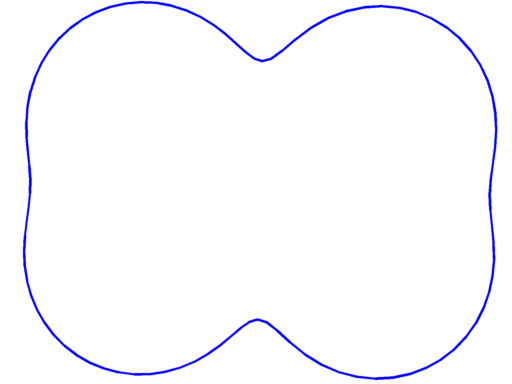 |
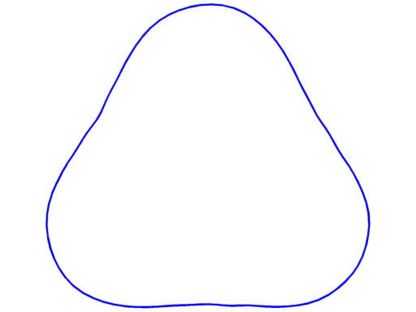 |
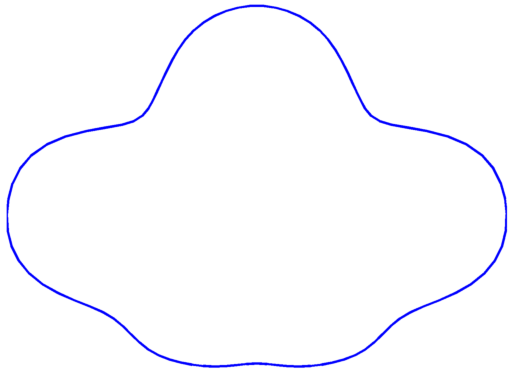 |
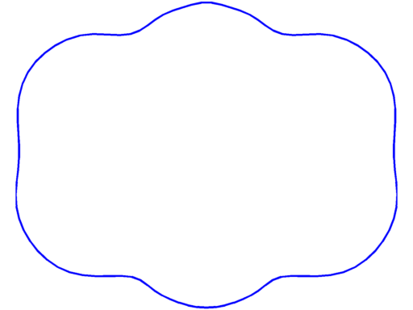 |
$\lambda_5 = 78.15$ multiplicity $2$ |
$\lambda_6 = 88.48$ multiplicity $3$ |
$\lambda_7 = 106.16$ multiplicity $3$ |
$\lambda_8 = 118.88$ multiplicity $3$ |
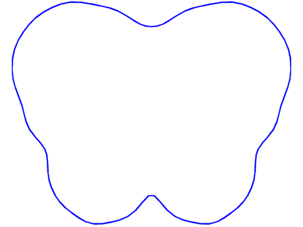 |
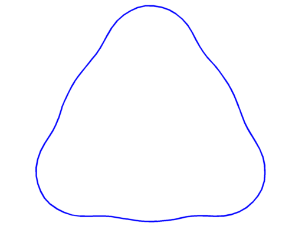 |
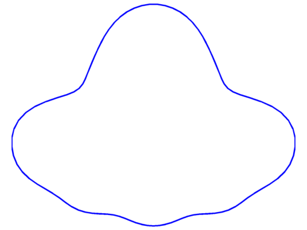 |
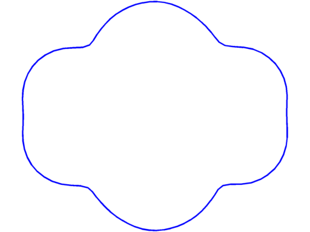 |
$\lambda_9 = 132.48$ multiplicity $3$ |
$\lambda_{10} = 142.69$ multiplicity $4$ |
$\lambda_{11} = 159.40$ multiplicity $4$ |
$\lambda_{12} = 172.87$ multiplicity $4$ |
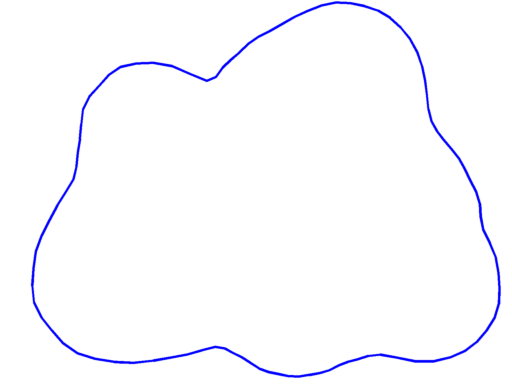 |
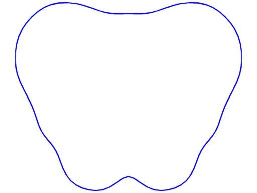 |
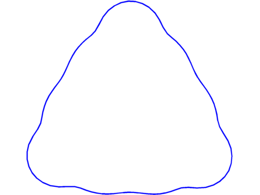 |
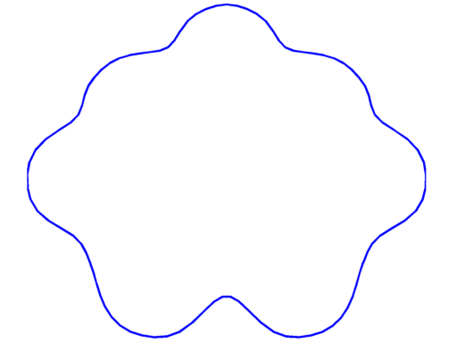 |
$\lambda_{13} = 187.02$ multiplicity $4$ |
$\lambda_{14} = 198.96$ multiplicity $4$ |
$\lambda_{15} = 209.63$ multiplicity $5$ |
$\lambda_{16} = 231.07$ multiplicity $4$ |
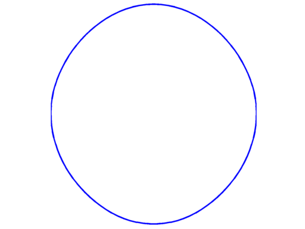 |
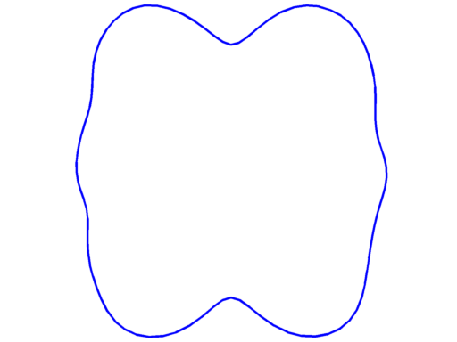 |
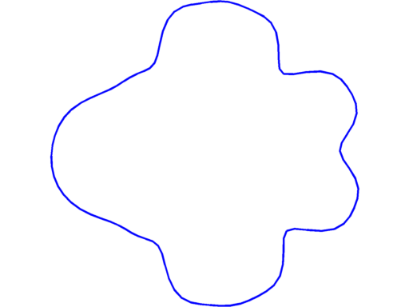 |
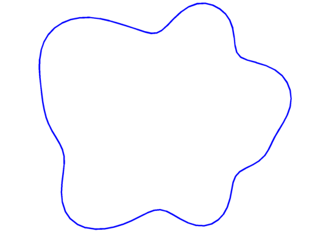 |
$\lambda_{17} = 241.04$ multiplicity $3$ |
$\lambda_{18} = 256.06$ multiplicity $4$ |
$\lambda_{19} = 268.18$ multiplicity $4$ |
$\lambda_{20} = 281.27$ multiplicity $5$ |
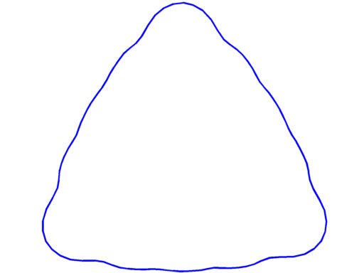 |
Image unavailable in the legacy archive | Image unavailable in the legacy archive | Image unavailable in the legacy archive |
$\lambda_{21} = 289.56$ multiplicity $4$ |
← Back to numerical computations
Created: Dec 2014, Last modified: 16 Feb 2015